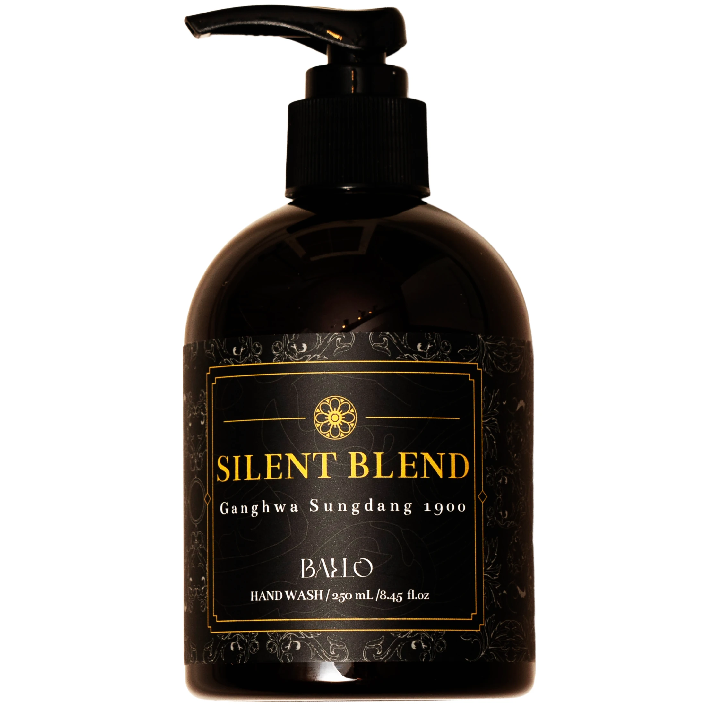
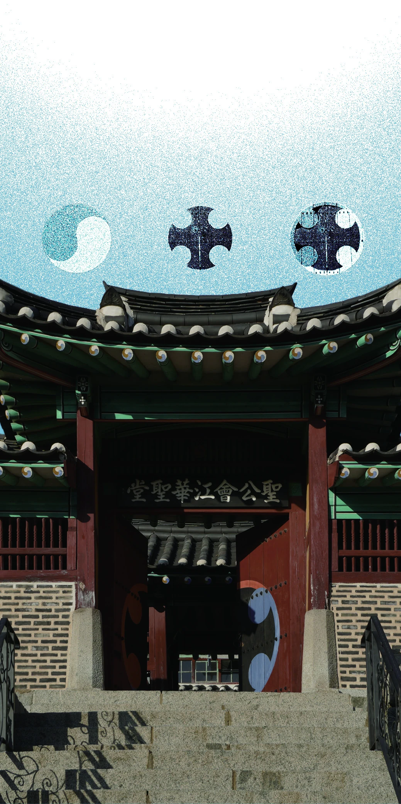

책자와 보유 제품 사진 · 사진 속 소품은 판매 구성에 포함되지 않습니다.
사일런트 블렌드 핸드워시
물을 틀고 손을 씻는 순간,
향으로 시작하는 다음 일상.
- 형태
- 펌프형 핸드워시
- 용량
- 250 mL
- 사용 장면
- 물로 씻어내는 손 세정
BALLO 스마트스토어 첫 화면이 새 창으로 열립니다.
물을 틀고 손을 씻는,
하루의 작은 전환.
펌프를 누르고, 손에 덜고, 물로 씻어내는 익숙한 순서. 실제 사용 장면으로 제품을 살펴보세요.

문을 지나듯,
다음 순간을 준비합니다.
외삼문과 내삼문을 지나며 풍경이 달라지는 경험. 발로는 이 감각을 손을 씻으며 일상을 전환하는 짧은 시간과 연결했습니다.
문과 종의 배경 읽기 ↗밝은 첫인상에서,
포근한 우디의 여운까지.
시트러스에서 부드러운 꽃향으로 이어집니다. 그 사이로 인센스를 떠올리게 하는 차분한 인상이 흐르고, 샌달우드와 바닐라, 머스크가 포근한 잔향을 남깁니다.
밝게 열리는 첫인상
새로운 장소를 처음 마주하듯,
밝은 시트러스의 인상으로 문을 엽니다.
탠저린 · 베르가못 · 피치 · 유칼립투스
서로 다른 결이 만날 때
부드러운 꽃향 사이로 인센스를
떠올리게 하는 차분한 인상이 흐릅니다.
자스민 · 일랑일랑 · 튜베로즈 · 라브다넘
오래 기억하는 마음
샌달우드를 중심으로 바닐라와
머스크의 포근한 여운이 남습니다.
머스크 · 앰버 · 바닐라 · 패출리 · 샌달우드
손을 씻는 제품의
구성을 살펴봅니다.
세정 성분을 바탕으로 글리세린과 여섯 식물 추출물을 함께 소개합니다.
세정 구성
소듐C14-16올레핀설포네이트
코코-베타인 · 코카마이드엠이에이
함께 담은 성분
글리세린과 향료,
라벤더꽃·페퍼민트잎 등 여섯 식물 추출물.
여섯 식물 추출물.
세정 구성과 함께 담은 여섯 식물 추출물을 소개합니다. 익숙한 이름에서도 식물의 종류와 사용 부위는 다를 수 있습니다.
라벤더꽃추출물
베르가못잎추출물
페퍼민트잎추출물
프리지어추출물
마트리카리아꽃추출물
로즈마리잎추출물
여기서 베르가못잎은 Monarda didyma를 가리키며, 향의 구성에 소개된 감귤류 베르가못과 구분됩니다.
펌프에서 라벨까지,
가까이 보는 핸드워시.
손을 씻는 동안, 그리고 세면대에 놓인 모습에서도 컬렉션의 디자인을 만납니다. 손끝의 돌봄을 이어갈 제품으로 핸드크림도 함께 살펴보세요.
패턴과 라벨의 배경 ↗물을 묻히고, 씻어내고.
- 물을 묻히기
손에 물을 묻혀 주세요.
- 적당량 덜기
적당량을 덜어 손 전체에 문질러 주세요.
- 충분히 헹구기
물로 충분히 헹구어 주세요.
사용 전 실물 제품에 표시된 안내를 확인해 주세요.
구매와 제품 정보는 어디서 확인하나요?
구매는 BALLO 스마트스토어에서 진행합니다. 제품별 구성, 전체 표시정보와 배송·교환 안내는 판매처에서 확인해 주세요.
BALLO 스마트스토어 방문 ↗입점·비치 또는 선물용으로 납품받을 수 있나요?
현재 판매 중인 제품을 기존 패키지로 납품합니다. 필요한 제품과 수량, 희망 일정, 배송 지역을 알려주세요. 포장 맞춤은 현재 제공하지 않습니다.
SILENT BLEND를
함께 전합니다.
매장에 소개할 제품을 찾거나, 기업·기관의 선물을 준비하고 있다면 문의해 주세요. 현재 판매 중인 제품을 기존 패키지로 납품합니다.
현재 포장 맞춤은 제공하지 않습니다.